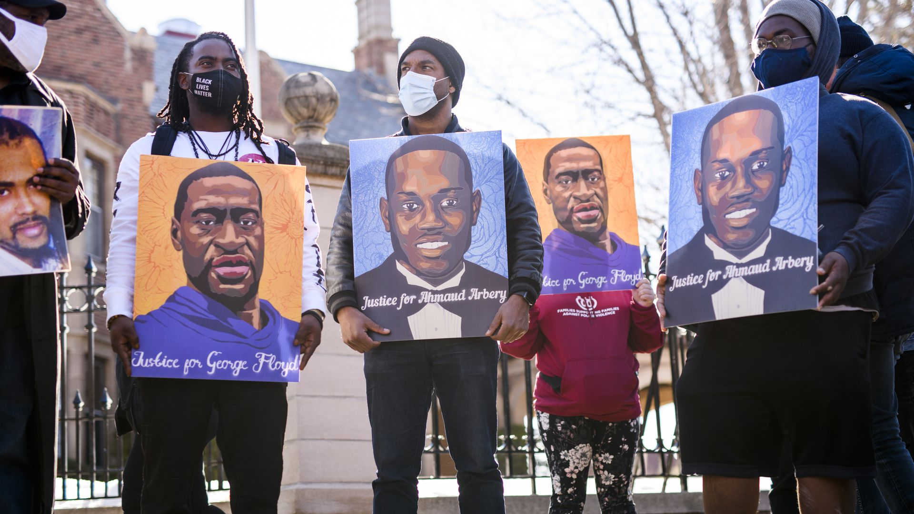
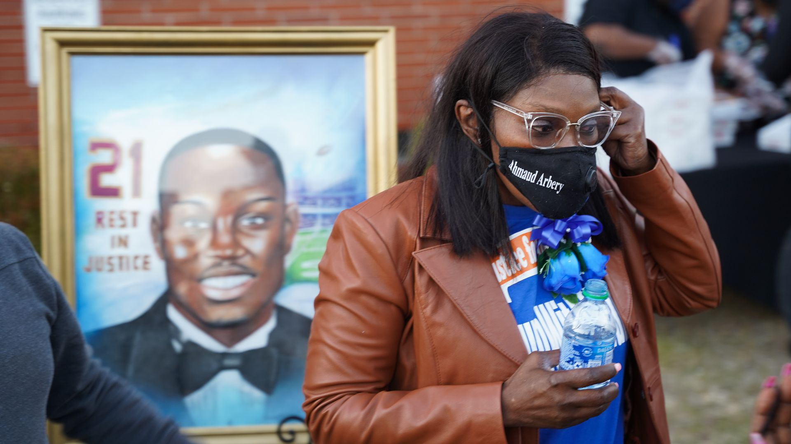

Ahmaud Arbery murder suspects plead not guilty to hate crimes
The three white men charged in the death of 25-year-old Ahmaud Arbery last year pled not guilty to federal hate crime charges at a court proceeding in Georgia Tuesday, Reuters reports.
Why it matters: Arbery's case is one of several that propelled nationwide Black Lives Matter protests in the summer of 2020.
The big picture: In April the Department of Justice charged the three men — Travis McMichael, his father, Gregory McMichael, and William 'Roddie' Bryan — with federal hate crimes and attempted kidnapping in connection to Arbery's death.
Posted On: 2021-05-11T00:00:00
Posted By: Ivana Saric


Content Date: 2021-05-11
Download Date: 2021-05-15
Document ID: L0C04CCCN